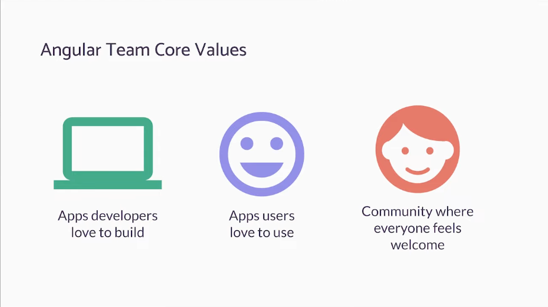
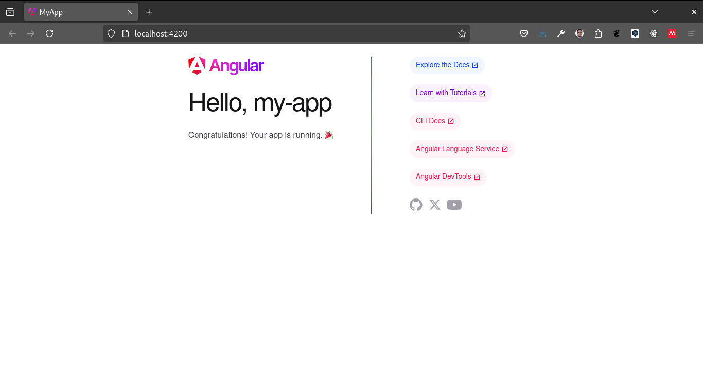
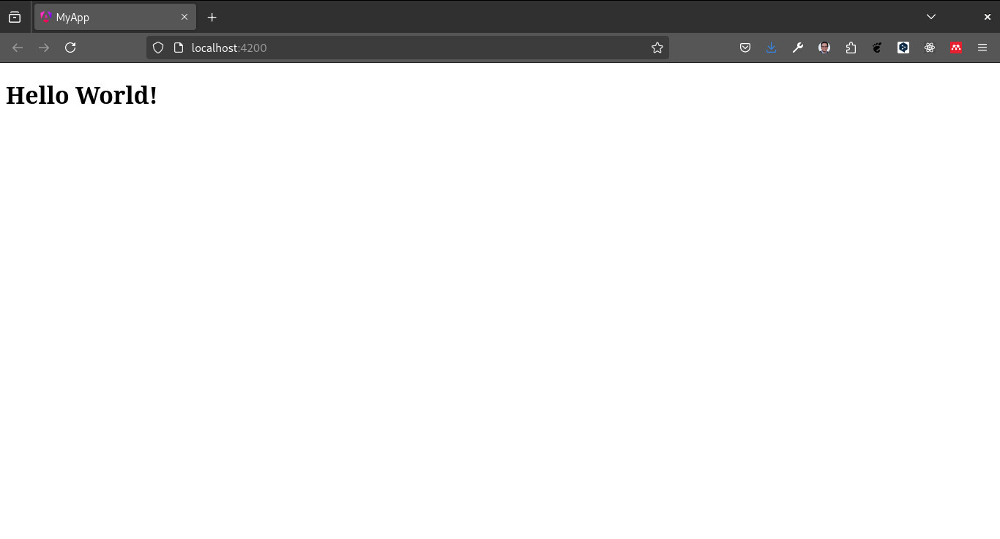

Introducción a Angular

¿Qué es Angular?

Angular es un framework de desarrollo de aplicaciones web desarrollado por Google. Angular es un framework de código abierto y gratuito que permite a los desarrolladores crear aplicaciones web de una sola página (SPA) de alta calidad y alto rendimiento.
Historia y evolución de Angular
Angular se lanzó por primera vez en 2010 por Google. Angular es un marco de desarrollo de aplicaciones web de código abierto y gratuito que permite a los desarrolladores crear aplicaciones web de una sola página (SPA) de alta calidad y alto rendimiento.
Características de Angular
Angular es un framework de desarrollo de aplicaciones web que ofrece una serie de características y funcionalidades que lo hacen único y poderoso. Algunas de las características más importantes de Angular son:
Componentes: Angular es un framework basado en componentes, lo que significa que las aplicaciones web se construyen a partir de componentes reutilizables y modulares. Los componentes son bloques de construcción de una aplicación Angular y se pueden reutilizar en diferentes partes de la aplicación.
Directivas: Angular ofrece una serie de directivas que permiten a los desarrolladores extender y modificar el comportamiento de los elementos HTML. Las directivas son atributos especiales que se pueden agregar a los elementos HTML para agregar funcionalidades adicionales.
Servicios: Angular ofrece una serie de servicios que permiten a los desarrolladores compartir datos y funcionalidades entre diferentes partes de la aplicación. Los servicios son clases que se pueden inyectar en los componentes y otros servicios para compartir datos y funcionalidades.
Inyección de dependencias: Angular utiliza un sistema de inyección de dependencias que permite a los desarrolladores inyectar dependencias en los componentes y servicios de la aplicación. Esto facilita la creación de aplicaciones modulares y reutilizables.
Rutas: Angular ofrece un sistema de enrutamiento que permite a los desarrolladores crear aplicaciones de una sola página (SPA) con múltiples vistas. El sistema de enrutamiento de Angular permite a los desarrolladores definir rutas y vistas para diferentes partes de la aplicación.
Pipes: Angular ofrece una serie de pipes que permiten a los desarrolladores transformar y formatear datos en las plantillas HTML. Los pipes son funciones que se pueden aplicar a los datos en las plantillas HTML para transformarlos y formatearlos de diferentes maneras.
Formularios: Angular ofrece un sistema de formularios que permite a los desarrolladores crear formularios reactivos y dinámicos en las aplicaciones web. El sistema de formularios de Angular permite a los desarrolladores validar y gestionar los datos de los formularios de manera eficiente.
Testing: Angular ofrece un sistema de pruebas que permite a los desarrolladores probar las aplicaciones web de manera eficiente. Angular proporciona herramientas y utilidades para escribir pruebas unitarias y de integración para las aplicaciones web.
Ventajas de Angular
Angular es un framework de desarrollo de aplicaciones web que ofrece una serie de ventajas y beneficios que lo hacen único y poderoso. Algunas de las ventajas más importantes de Angular son:
Productividad: Angular es un framework de desarrollo de aplicaciones web que permite a los desarrolladores crear aplicaciones web de alta calidad y alto rendimiento de manera rápida y eficiente. Angular ofrece una serie de características y funcionalidades que facilitan el desarrollo de aplicaciones web.
Reutilización de código: Angular es un framework basado en componentes, lo que significa que las aplicaciones web se construyen a partir de componentes reutilizables y modulares. Los componentes son bloques de construcción de una aplicación Angular y se pueden reutilizar en diferentes partes de la aplicación.
Mantenimiento: Angular es un framework de desarrollo de aplicaciones web que facilita el mantenimiento de las aplicaciones web. Angular ofrece una serie de características y funcionalidades que facilitan la gestión y el mantenimiento de las aplicaciones web.
Escalabilidad: Angular es un framework de desarrollo de aplicaciones web que permite a los desarrolladores crear aplicaciones web escalables y de alto rendimiento. Angular ofrece una serie de características y funcionalidades que facilitan la escalabilidad de las aplicaciones web.
Comunidad activa: Angular es un framework de desarrollo de aplicaciones web que cuenta con una comunidad activa de desarrolladores y contribuidores. La comunidad de Angular es muy activa y ofrece soporte, documentación y recursos para los desarrolladores que trabajan con Angular.
Desventajas de Angular
Angular es un framework de desarrollo de aplicaciones web que ofrece una serie de ventajas y beneficios, pero también tiene algunas desventajas y limitaciones. Algunas de las desventajas más importantes de Angular son:
Curva de aprendizaje: Angular es un framework de desarrollo de aplicaciones web que tiene una curva de aprendizaje empinada. Los desarrolladores que no están familiarizados con Angular pueden encontrar difícil aprender y dominar el framework.
Complejidad: Angular es un framework de desarrollo de aplicaciones web que puede ser complejo y difícil de entender. Angular ofrece una serie de características y funcionalidades avanzadas que pueden ser difíciles de dominar para los desarrolladores principiantes.
Rendimiento: Angular es un framework de desarrollo de aplicaciones web que puede tener problemas de rendimiento en aplicaciones web grandes y complejas. Angular ofrece una serie de características y funcionalidades que pueden afectar el rendimiento de las aplicaciones web.
Tamaño: Angular es un framework de desarrollo de aplicaciones web que puede tener un tamaño grande y pesado. Angular ofrece una serie de características y funcionalidades que pueden aumentar el tamaño de las aplicaciones web.
Compatibilidad: Angular es un framework de desarrollo de aplicaciones web que puede tener problemas de compatibilidad con otros frameworks y bibliotecas. Angular ofrece una serie de características y funcionalidades que pueden no ser compatibles con otros frameworks y bibliotecas.
Comparación con otros frameworks
Angular es un framework de desarrollo de aplicaciones web que ofrece una serie de características y funcionalidades que lo hacen único y poderoso. A continuación se muestra una comparación de Angular con otros frameworks de desarrollo de aplicaciones web populares:
React: React es una biblioteca de JavaScript desarrollada por Facebook que se utiliza para crear interfaces de usuario interactivas y dinámicas. React es una biblioteca de JavaScript que se centra en la creación de componentes reutilizables y modulares. React es una biblioteca de JavaScript que se utiliza para crear aplicaciones web de una sola página (SPA) de alta calidad y alto rendimiento.
Vue: Vue es un framework de desarrollo de aplicaciones web de código abierto y gratuito que se utiliza para crear aplicaciones web de una sola página (SPA) de alta calidad y alto rendimiento. Vue es un framework de desarrollo de aplicaciones web que se centra en la creación de componentes reutilizables y modulares. Vue es un framework de desarrollo de aplicaciones web que ofrece una serie de características y funcionalidades que facilitan el desarrollo de aplicaciones web.
Svelte: Svelte es un framework de desarrollo de aplicaciones web de código abierto y gratuito que se utiliza para crear aplicaciones web de una sola página (SPA) de alta calidad y alto rendimiento. Svelte es un framework de desarrollo de aplicaciones web que se centra en la creación de componentes reutilizables y modulares. Svelte es un framework de desarrollo de aplicaciones web que ofrece una serie de características y funcionalidades que facilitan el desarrollo de aplicaciones web.
Configuración del entorno de desarrollo (Angular CLI)
Para comenzar a trabajar con Angular, necesitamos configurar un entorno de desarrollo. Angular CLI (Command Line Interface) es una herramienta de línea de comandos que nos permite crear, construir y probar aplicaciones Angular de manera rápida y eficiente.
Para instalar Angular CLI, necesitamos tener Node.js y npm instalados en nuestro sistema. Node.js es un entorno de ejecución de JavaScript que nos permite ejecutar JavaScript en el servidor. npm es un administrador de paquetes de Node.js que nos permite instalar y administrar paquetes de Node.js.
Para instalar Angular CLI, ejecutamos el siguiente comando en la terminal:
npm install -g @angular/cliUna vez que Angular CLI se haya instalado correctamente, podemos crear un nuevo proyecto Angular ejecutando el siguiente comando en la terminal:
ng new my-appEste comando creará un nuevo proyecto Angular llamado my-app en el directorio actual. Una vez que el proyecto se haya creado correctamente, podemos navegar al directorio del proyecto y ejecutar el siguiente comando para iniciar el servidor de desarrollo:
ng serve
Este comando iniciará el servidor de desarrollo de Angular en el puerto 4200. Podemos abrir un navegador web y navegar a http://localhost:4200 para ver nuestra aplicación Angular en acción.
Estructura de un proyecto Angular
Un proyecto Angular consta de varios archivos y directorios que definen la estructura de la aplicación. A continuación se muestra la estructura de un proyecto Angular típico:
e2e: Este directorio contiene las pruebas de extremo a extremo de la aplicación.
node_modules: Este directorio contiene los módulos de Node.js que se utilizan en la aplicación.
src: Este directorio contiene el código fuente de la aplicación.
app: Este directorio contiene los componentes, servicios, directivas y pipes de la aplicación.
assets: Este directorio contiene los archivos estáticos de la aplicación, como imágenes, fuentes y estilos.
environments: Este directorio contiene los archivos de configuración de los entornos de la aplicación.
index.html: Este archivo es la página principal de la aplicación.
main.ts: Este archivo es el punto de entrada de la aplicación.
styles.css: Este archivo contiene los estilos globales de la aplicación.
angular.json: Este archivo contiene la configuración de Angular CLI para el proyecto.
Hola Mundo en Angular
Vamos a modificar el archivo app.component.ts para mostrar un mensaje de “Hola Mundo” en nuestra aplicación Angular. Abre el archivo app.component.ts y modifícalo de la siguiente manera:
import { Component } from '@angular/core';
import { RouterOutlet } from '@angular/router';
@Component({
selector: 'app-root',
standalone: true,
imports: [RouterOutlet],
template: `
1 <h1>Hello World!</h1>
`,
styleUrl: './app.component.css'
})
export class AppComponent {
title = 'my-app';
}- 1
- Agregamos un mensaje de “Hola Mundo” en la plantilla HTML del componente.
Este código define un componente Angular llamado AppComponent que muestra un mensaje de “Hola Mundo” en la plantilla HTML. Ahora, si abrimos un navegador web y navegamos a http://localhost:4200, deberíamos ver el mensaje de “Hola Mundo” en nuestra aplicación Angular.
Otra opción sería modificar el archivo app.component.html, borramos el contenido y agregamos el siguiente código:
<h1>Hello World!</h1>Dejamos el archivo app.component.ts de la siguiente manera:
import { Component } from '@angular/core';
import { RouterOutlet } from '@angular/router';
@Component({
selector: 'app-root',
standalone: true,
imports: [RouterOutlet],
templateUrl: './app.component.html',
styleUrl: './app.component.css'
})
export class AppComponent {
title = 'my-app';
}No olvides que puedes correr un servidor de desarrollo con el siguiente comando en la terminal.
ng serve -oEl flag -o abrirá automáticamente el navegador en la dirección http://localhost:4200.

Si estás trabajando con visual studio code, puedes instalar la extensión Angular Language Service para tener autocompletado y sugerencias en tu código.